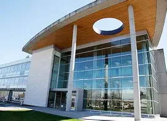

Surrey Campus ↔ Langley Campus
This route connects KPU’s Surrey Main Campus with the Langley Campus, offering students a convenient and cost‑effective carpooling option.
RideShare KPU makes your commute smoother, more affordable, and better for the environment.

Surrey Campus

Langley Campus
Many students regularly travel between these two campuses for classes and labs. Sharing rides helps cut costs, saves time, and fosters connections with fellow KPU students.
Why Choose This Route?
- Cost Savings: Share fuel and parking expenses with other students.
- Time Efficiency: Enjoy carpool lanes and reduced parking stress.
- Community: Meet peers heading to the same campus.
- Eco‑Friendly: Lower your carbon footprint by reducing solo trips.
Typical Commute Info
The drive between Surrey and Langley campuses typically takes about 25–30 minutes, depending on traffic. Carpooling makes parking easier and more predictable.
How to Get Started
- Create a free RideShare KPU account with your student email.
- Search available rides or post your own commute for Surrey ↔ Langley.
- Connect with verified KPU students traveling your route.
- Arrange pickup times and meet‑up points through the platform.
- Enjoy the ride and start saving!
Ready to Ride Surrey ↔ Langley?
Join the RideShare KPU community today and start sharing rides!
Join Now